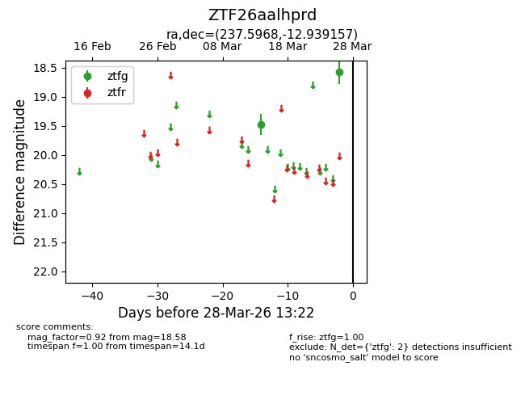
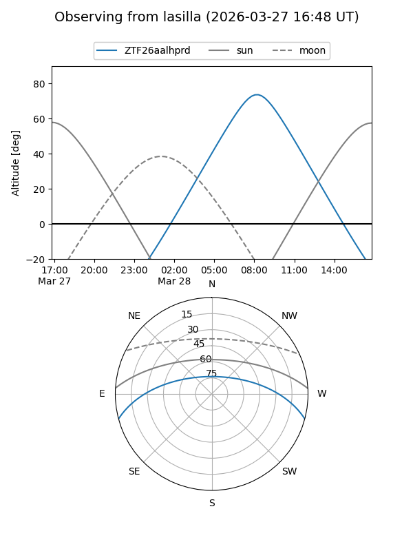
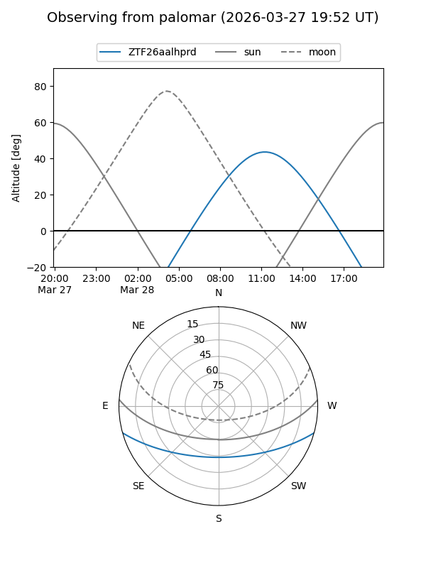

ZTF26aalhprd
Target ZTF26aalhprd at 2026-03-28 13:25
Aliases and brokers:
FINK: link
Lasair: link
ALeRCE: link
alt names
ZTF26aalhprd (ztf,fink_ztf)
Coordinates:
equatorial (ra, dec) = 237.5968,-12.93916
equatorial (HMS+DMS) = 15:50:23.23,-12:56:20.97
galactic (l, b) = (356.0367,+30.93335)
Flags:
Photometry:
last ztfg=18.58
2 ztfg detections
Lightcurve

Visibility


Additional plots